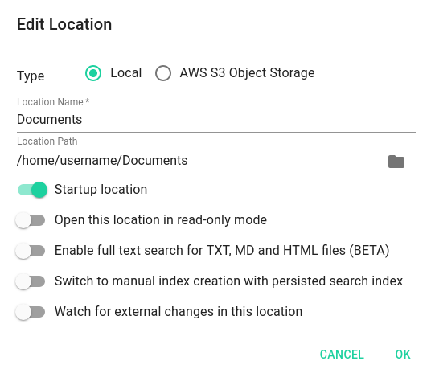

Locations
Table of Contents
A location is a folder on your local file system, which will serve as a root for listing sub folders, files and documents. Typical locations are for example the folder where you collect your photos or folders where you store documents, ebooks or music.
Hint: Do not choose very large directories such as your home folder as a location root folder, as this may lead to performance issues. The reason for this is that TagSpaces is indexing the whole location every time you open it and the indexing can just take time if the location contains many files. On modern computers with SSD harddrives having a location with up to 60000 files is usually not a problem. The current upper limit for files indexed in a locations is 200000.
The location manager is can be opened by clicking the case button (1) from the vertical navigation, or by pressing the CTRL+1 key combination. Once opened, you will see a list of the currently configured locations. Here you can open any location by clicking its name. You can add new locations, by clicking on the Connect new location button (2). This button will open the Connect a Location dialog, which is very similar to the Edit Location dialog. The torch icon (3) indicates Startup Location, which is the location loaded automatically on the application start.
Clicking second time on a location name, will trigger the loading of the sub directories in this locations, once loaded this folder will be listed in the folder navigation area (5)

The location with the cloud icon (6) in front of its name is located in the AWS S3 compatible cloud storage. See cloud locations for more details.
The location with the light green background color (4) is the currently opened location. The 3-dot button located on the most right part of every location in the location manager will open the context menu for this location. This menu contains the following menu entries:
- Edit Location - will open the Edit Location dialog where you can change the location properties such as name or path.
- Refresh Location Index - will trigger the indexing process manually, this menu entry is visible only for the currently opened location
- Move up - will move the location visually up in the location manager
- Move down - will move the location visually down in the location manager
- Remove location - will remove the location permanently from the app. This operation will not affect your files, it only removes its reference in TagSpaces.
- Show in File Manager - will open the path in your file system to which this location point in the default file manager of your operating system
- Close Location - will simply close this location if it is currently opened.
Location types
In TagSpaces there two type of locations, regular (local) and cloud based (AWS S3 Object Storage). The type can be selected in the create and edit location dialogs.
Regular Locations
Regular locations are pointing to a folder located on your local computer. This could be also a folder where you sync locally your Dropbox files or a folder from a connected network drive.
Note: Be careful with connected huge folder located on network drive, depending on the speed of the network, this could lead to performance issues.

The regular locations have the following properties:
- Location name - this is the name of location as displayed in the location manager
- Location path - the path from your computer, to which this location points
- Startup location - turning this switch on will make the location load automatically on application start. You can set only one location to be a startup one.
- Open this location in read-only mode pro - switches the interface of TagSpaces to read-only mode
- Enable full text search for TXT, MD and HTML files pro - activates the indexing of the content of text, markdown and HTML files.
- Switch to manual index creation with persisted search index pro - disables the automatic indexing of a location on its opening. The application will try to open a previously created index located in a file tsi.json from the .ts folder of the location. This is useful on locations with many files, where the content does not change very often.
- Watch for external changes in this location pro - once switched on TagSpaces will watch the folder to which the location points and all its sub folders for changes and reflect them in the application.
Cloud Locations
These location are pointing to AWS S3 compatible stores (also known as buckets) located in the Internet.
pro Cloud locations are available only in the Pro and Enterprise editions of TagSpaces.

In addition to the regular locations, the cloud locations have the following properties:
- Location Path - the path in the bucket to which this location points
- Access Key - the access key of a user, who has the rights to open this bucket
- Secret Access Key - the secret access key of the user
- Bucket Name - the name of the bucket to which this location points
- Region - the AWS region, where the bucket is hosted. The dropdown is located on the right from the bucket name.
Note: Watch for external changes in this location is disabled because it is not available for cloud locations.
In our tutorial section you can find a complete manual on how to create a new AWS S3 bucket and connect it as location in TagSpaces.